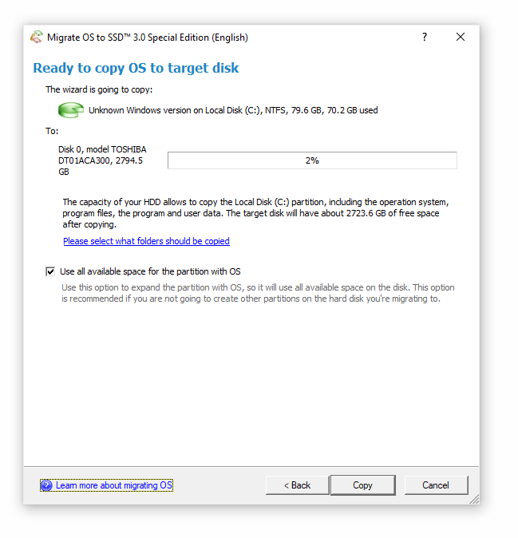
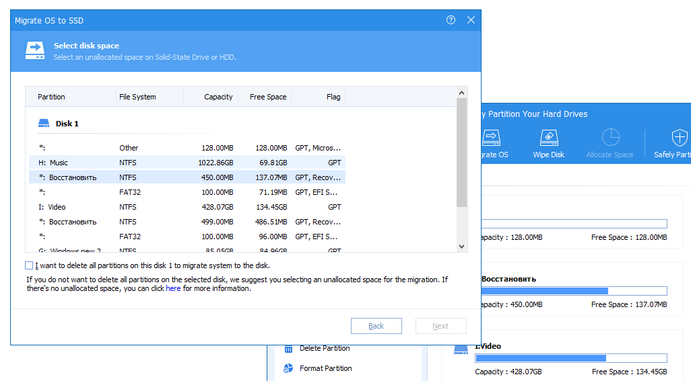
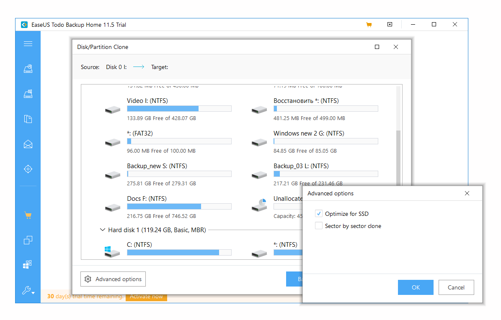

Как перенести систему с HDD на SSD на ноутбуке или ПК - Пошаговая инструкция, несколько простых способов - Программы для переноса системы на ССД - Замена жёсткого диска с переносом системы.
Перенос системы Windows 10 на SSD-накопитель может понадобиться в ряде случаев: например, при покупке нового устройства, при замене жёсткого диска, при клонировании HDD на SSD. В отличие от Windows XP, где было достаточно скопировать образ жёсткого диска и переместить его на новый раздел носителя, системы Windows 7-10 сильно привязаны к накопителю, и порой без специальных утилит перенос системы с HDD на SSD практически невозможен.
Что даёт клонирование HDD на SSD? Во-первых, он освобождает место на первом диске для хранения других файлов. Также это существенная экономия времени - вам не придётся устанавливать на другом диске ОС с нуля и настраивать все необходимые драйверы. Это существенные достоинства, тем более, что перенос ОС на SSD можно осуществить за несколько простых действий.
Итак, рассмотрим лучшие способы, как увеличить производительность устройства, заменив HDD на SSD и переместив на новый диск операционную систему и все нужные файлы.
Перед тем, как воспользоваться одной из утилит для переноса Windows 10, необходимо подготовить устройство к процессу.
Готово. Теперь, когда ваша система полностью готова к переносу на другой диск, приступим к непосредственному процессу переноса данных.
Чтобы не устанавливать новые утилиты на компьютер, можно выполнить перенос системы на SSD с помощью встроенных возможностей системы. Это потребует некоторых временных затрат, но процесс не отличается большой сложностью:
В основном процесс перемещения системы занимает от 10 до 15 минут. Если же представленная инструкция показалась вам слишком трудоёмкой, читайте дальнейшие способы переноса Windows 10, которые включают в себя использование различных утилит.
Простую утилиту, позволяющую переносить операционную систему и файлы вместе с ней, Paragon Migrate, можно установить на официальном сайте производителя. Она значительно ускоряет процесс перемещения и позволяет не трогать встроенные возможности системы.

После завершения процесса просто нажмите на кнопку "Закрыть" и перезагрузите компьютер. Для того, чтобы продолжить работу с нового жесткого диска, выберите его в режиме БИОС или отключите предыдущий жёсткий диск.
Бесплатная программа AOMEI Partition Assistant позволит не только перенести винду на ССД, но и разбить ваш жёсткий диск на разделы. Скачать утилиту можно на официальном сайте разработчика.

Готово! Вам останется лишь загрузиться с нового жёсткого диска, когда процесс установки будет завершён.
Другой бесплатной программой для переноса операционной системы на ССД-диск является EaseUS Backup. Найти её можно по ссылке на сайте разработчика. При скачивании запрашивается ваш e-mail, но вы можете ввести любой, если хотите отказаться от рассылки сообщений.

Время ожидания завершения зависит от объема копируемых данных, но оно редко превышает 15 минут. После завершения процесса клонирования вы можете загрузить систему с нового жесткого диска.